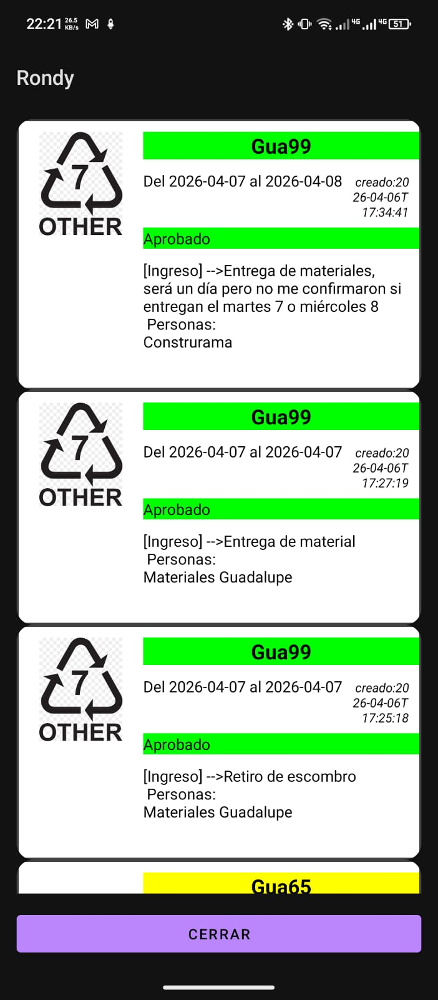

Rondy permite gestionar rondines de seguridad mediante escaneo NFC, generando reportes automáticos con tiempos, mapas y envío directo por WhatsApp.
Comenzar AhoraConfigura TAGS NFC físicos en puntos estratégicos y permite que el rondinero registre cada recorrido de forma precisa.
El guardia escanea cada punto mediante NFC.
Se capturan tiempos exactos y ubicación del recorrido.
Envío automático por WhatsApp con mapa y detalles.
Lleva el control de seguridad a otro nivel con herramientas diseñadas para supervisión real, control operativo y trazabilidad completa.
Supervisa en tiempo real qué actividades están autorizadas dentro del condominio.
Registra, da seguimiento y automatiza el control de incidencias dentro del condominio.
Identifica vehículos y gestiona estacionamientos de forma eficiente.
Reduce tiempos y errores en operación diaria.
Control total de actividades autorizadas.
Toda la información centralizada y accesible.
Digitaliza tus rondines y mejora el control operativo.
Obtener Versión ProVisualiza cómo el guardia interactúa con permisos, incidencias y el mapa en tiempo real.
El guardia puede verificar en segundos si un trabajo está autorizado directamente desde el mapa.
